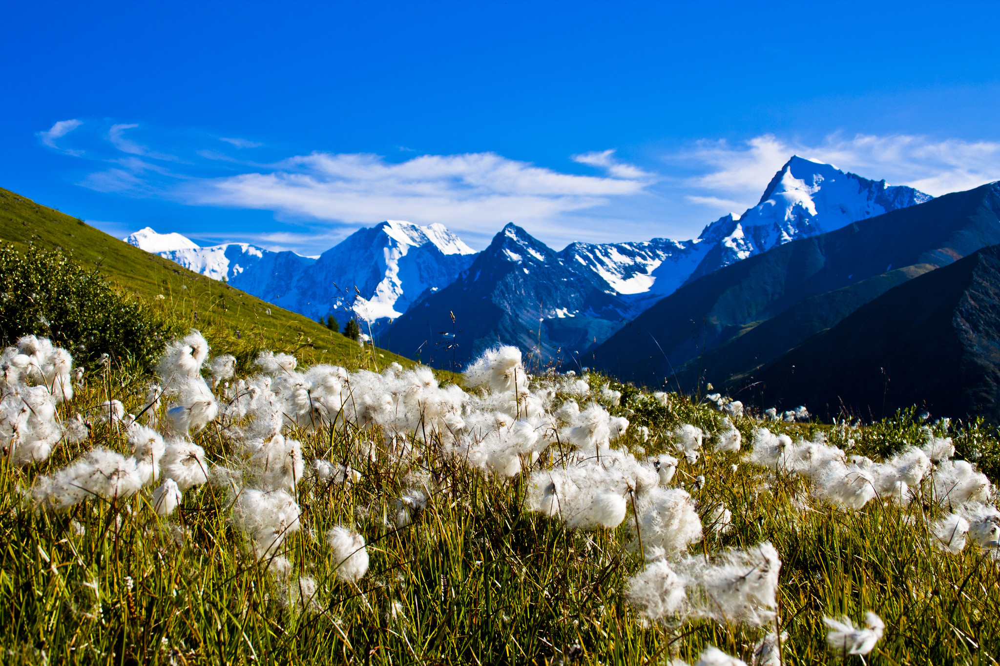

Домбай, пожалуй, самый популярный горнолыжный курорт Кавказа. Сюда приезжают те, кто хочет полюбоваться на красоту гор и покататься на лыжах без лишних переплат. Домбай находится в Карачаево-Черкесии, в середине Тебердинского заповедника. Местные жители очень приветливы, горные склоны ждут своих лыжников, а природа здесь просто потрясающая.

В Карачае «Домбай» означает «Зубр». По одной из легенд, было время, когда этими могучими животными были богаты здешние леса. Название самой высокой горы в этом районе — Домбай-Ульген (4046 м) с карачаевского языка означает «Убитый зубр». Согласно другой легенде, Домбайская поляна стала так называться после того, как охотник по имени Доммай, преследуя туров, убил одного из них, но, не сумев сохранить равновесие, упал с высокой горы в пропасть и погиб.Домбай называют «сердцем гор». Он окружен ими со всех сторон. А красавица Белалакая — это особый символ курорта. Она возвышается над всей домбайской поляной и настолько прекрасна, что ей восхищались многие поэты.Необычное сооружение, которое вы можете увидеть на многих рекламных проспектах и открытках — оригинальная гостиница «Тарелка», выполненная в форме инопланетного корабля, скромно расположившаяся на склоне горы, на высоте 2 250 м над уровнем моря. Это творение финского архитектора Матти Сууронена является памятником архитектуры XX века и работает по сей день.
Уральские горы представляют собой уникальную горную систему, разделяющую огромный субконтинент Евразия на две части – Европу и Азию. Они берут свое начало в России от побережья Северного Ледовитого океана и, протянувшись на более чем 2500 км, заканчиваются в знойных пустынях соседнего Казахстана. Нашу страну горы Урала пересекают с севера на юг, проходя по пяти географическим зонам.Сама эта горная система, не просто разделяющая оба материка, но и являющаяся официально очерченным кордоном между ними, относится к Европе: граница обычно проводится по восточной подошве гор. Образовавшиеся в результате столкновения Евроазиатской и Африканской литосферных плит, Уральские горы охватывают огромную территорию. Она включает в себя просторы Свердловской, Оренбургской и Тюменской областей, Пермского края, Башкортостана и Республики Коми, а также Актюбинской и Кустанайской областей Казахстана. По своей высоте, не превышающей 1895 метров, горная система значительно уступает таким исполинам, как Гималаи и Памир. Например, вершины полярного Урала по уровню средние – 600-800 метров, не говоря уже о том, что по ширине хребта они еще и самые узкие. Однако в таких геологических характеристиках заложен несомненный плюс: они остаются доступными для человека. И речь тут идет не столько о научных исследованиях, сколько о туристической привлекательности тех мест, по которым они пролегают. Ландшафт Уральских гор поистине неповторим. Тут начинают свой бег кристально чистые горные ручьи и реки, вырастающие в более крупные водоемы. Такие большие реки, как Урал, Кама, Печора, Чусовая и Белая тоже протекают здесь.

Алтайские горы (Алтай)Золотые горы — так переводится Алтай с тюркских языков. Действительно, редкое место на Земле может соперничать с Алтайскими горами по природным богатствам, изумительным ландшафтам и чистоте.Алтайские горы — система хребтов, расположенных на территории нескольких государств Евразии — России, Казахстана, Монголии и Китая. Российские Алтайские горы, являющиеся самой высокой частью Сибири, находятся на территории двух субъектов страны — Республики Алтай и Алтайского края. Северный сосед горного региона — Новосибирская область, восточный — Кемеровская. "Сибирские Альпы", "российский Тибет" — так называют это удивительное место, привлекающее своей первозданной красотой, мощью и величием. Порожистые горные реки, кристально чистые озёра, бурлящие водопады, бесконечные хвойные леса и альпийские луга — щедрость алтайской природы завораживает и покоряет навсегда. Обширный участок региона, включающий в себя плоскогорье Укок, Катунский и Алтайский заповедники, Телецкое озеро и гору Белуху, входит в список Всемирного наследия ЮНЕСКО под названием «Алтай-Золотые горы».Рельеф Алтайских гор многообразен, здесь выделяются: участки древних равнин, альпинотипный ледниковый высокогорный рельеф, горы средней (1800-2000 метров) и низкой высоты (500-600 метров), глубокие котловины. Хребты изрезаны многочисленными реками, питающимися снегом. Бурные водные потоки втекают в знаменитые своей красотой озёра, лежащие в живописных долинах. В Алтайских горах зарождаются реки Бия и Катунь, которые, сливаясь, образуют Обь, — одну из самых полноводных и протяжённых рек России.Самый высокий хребет Алтайских гор — Катунский. Своими снежными склонами, острыми пиками, живописными озёрами и ледниками эта часть горной системы Алтая похожа на Альпы.Алтайские горы знамениты пещерами, которых здесь насчитывается более 300, особенно много их в бассейне рек Катунь, Ануй и Чарыш. Горный Алтай — край водопадов, самый высокий из которых — 60-метровый Текелю, впадающий в реку Аккем.
Полуостров Камчатка.Камчатка, расположенная на северо-восточной окраине России, представляет собой уникальный край, полный контрастов и совсем не похожий на остальную страну. Вулканы здесь соседствуют с ледниками, кипящие гейзеры и горячие источники со стремительными реками, водопады с озерами. Это природное многообразие не могло не стать основой для развития туризма, в частности, таких его направлений, как экспедиционное, горнолыжное и экстремальное. На Камчатке не придется скучать не только поклонникам активного отдыха, но и любящим тишину и единение с природой: где еще в России можно едва ли не весь день любоваться курящимися вершинами сопок, ласково поглаживаемыми лучами солнца?
Камчатку иногда называют «край географии», а в советские времена название этого полуострова, одного из крупнейших в стране, прочно закреплялось за последними партами в школьных классах. Над учениками, занимавшими там свои места, даже подшучивали: «Сидит на Камчатке». Действительно, эта земля ассоциируется с такими понятиями, как «дальний», «удаленный» и так далее. Однако сегодня Камчатка, несомненно, стала намного ближе, чем когда бы то ни было. И все благодаря активному развитию туристической инфраструктуры края. Чего вам здесь только не предложат для полноценного отдыха: это и насыщенные экскурсионные программы, и эксклюзивные туры с охотой и рыбной ловлей, подводным спортом, круизами по знаменитой Авачинской бухте, не говоря уже о конных и орнитологические путешествиях и, конечно, лечебно-оздоровительном и культурно-этнографическом туризме. Также стоит упомянуть снегоходные и вертолетные туры, но и это еще будет далеко не полный перечень.